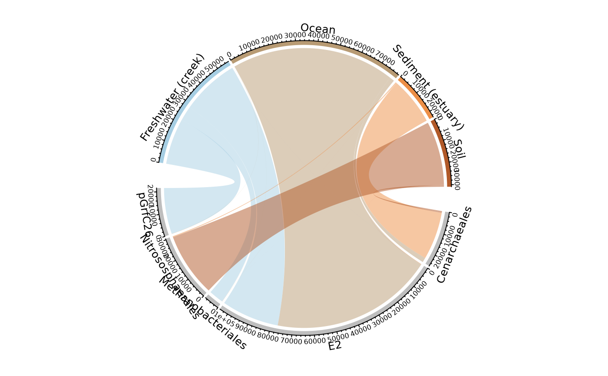

![[Maturing]](figures/lifecycle-maturing.svg)
Usage
circle_pq(
physeq = NULL,
fact = NULL,
taxa = "Order",
nproc = 1,
add_nb_seq = TRUE,
rarefy = FALSE,
min_prop_tax = 0.01,
min_prop_mod = 0.1,
gap_degree = NULL,
start_degree = NULL,
row_col = NULL,
grid_col = NULL,
log10trans = FALSE,
...
)Arguments
- physeq
(required): a
phyloseq-classobject obtained using thephyloseqpackage.- fact
(required) Name of the factor to cluster samples by modalities. Need to be in
physeq@sam_data.- taxa
(default: 'Order') Name of the taxonomic rank of interest
- nproc
(default 1) Set to number of cpus/processors to use for parallelization
- add_nb_seq
(default: TRUE) Represent the number of sequences or the number of OTUs (add_nb_seq = FALSE)
- rarefy
(logical) Does each samples modalities need to be rarefy in order to compare them with the same amount of sequences?
- min_prop_tax
(default: 0.01) The minimum proportion for taxon to be ploted
- min_prop_mod
(default: 0.1) The minimum proportion for modalities to be ploted
- gap_degree
Gap between two neighbour sectors. It can be a single value or a vector. If it is a vector, the first value corresponds to the gap after the first sector.
- start_degree
The starting degree from which the circle begins to draw. Note this degree is measured in the standard polar coordinate which means it is always reverse-clockwise.
- row_col
Color vector for row
- grid_col
Grid colors which correspond to sectors. The length of the vector should be either 1 or the number of sectors. It's preferred that grid_col is a named vector of which names correspond to sectors. If it is not a named vector, the order of grid_col corresponds to order of sectors.
- log10trans
(logical) Should sequence be log10 transformed (more precisely by log10(1+x))?
- ...
Additional arguments passed on to
chordDiagramorcircos.par
Value
A chordDiagram plot representing the
distribution of OTUs or sequences in the different modalities of the factor
fact
Examples
data("GlobalPatterns")
GP <- subset_taxa(GlobalPatterns, GlobalPatterns@tax_table[, 1] == "Archaea")
circle_pq(GP, "SampleType")
#> Only 4 modalities are plot (44.44%). Use 'min_prop_mod' to plot more samples.
#> Only 5 taxa are plot (45.45%). Use 'min_prop_tax' to plot more taxa

if (FALSE) {
circle_pq(GP, "SampleType", add_nb_seq = FALSE)
circle_pq(GP, "SampleType", taxa = "Class")
}